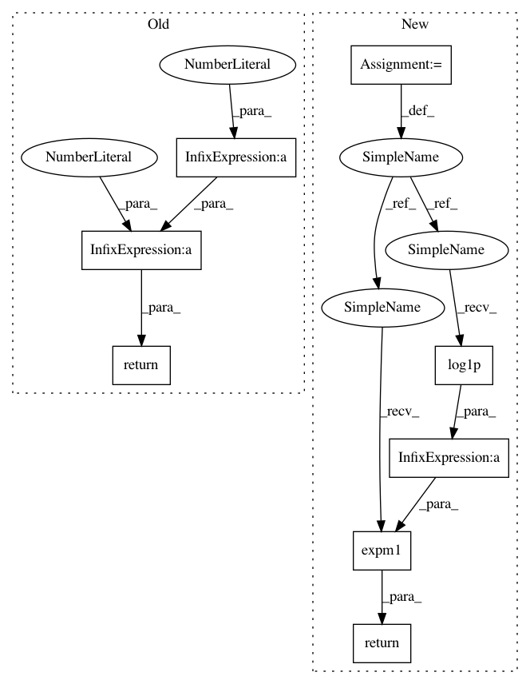

36221542b13f4245c4d06ab85f9fd108a7ebea07,scipy/stats/_continuous_distns.py,lomax_gen,_ppf,#lomax_gen#Any#Any#,3241
Before Change
return -c*log(1+x)
def _ppf(self, q, c):
return pow(1.0-q, -1.0/c)-1
def _stats(self, c):
mu, mu2, g1, g2 = pareto.stats(c, loc=-1.0, moments="mvsk")
return mu, mu2, g1, g2
After Change
return -c*special.log1p(x)
def _ppf(self, q, c):
return special.expm1(-special.log1p(-q)/c)
def _stats(self, c):
mu, mu2, g1, g2 = pareto.stats(c, loc=-1.0, moments="mvsk")
return mu, mu2, g1, g2
In pattern: SUPERPATTERN
Frequency: 3
Non-data size: 8
Instances
Project Name: scipy/scipy
Commit Name: 36221542b13f4245c4d06ab85f9fd108a7ebea07
Time: 2015-01-16
Author: manitejanmt@gmail.com
File Name: scipy/stats/_continuous_distns.py
Class Name: lomax_gen
Method Name: _ppf
Project Name: scipy/scipy
Commit Name: 36221542b13f4245c4d06ab85f9fd108a7ebea07
Time: 2015-01-16
Author: manitejanmt@gmail.com
File Name: scipy/stats/_continuous_distns.py
Class Name: lomax_gen
Method Name: _cdf
Project Name: scipy/scipy
Commit Name: 9c513f7239a29970ec932885cb58c4c32fa383fa
Time: 2016-06-10
Author: argriffi@ncsu.edu
File Name: scipy/stats/_continuous_distns.py
Class Name: bradford_gen
Method Name: _ppf
Project Name: scipy/scipy
Commit Name: 36221542b13f4245c4d06ab85f9fd108a7ebea07
Time: 2015-01-16
Author: manitejanmt@gmail.com
File Name: scipy/stats/_continuous_distns.py
Class Name: lomax_gen
Method Name: _ppf